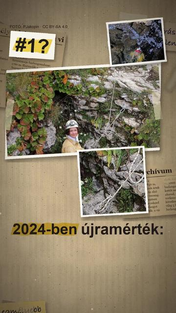

Megnézem a YouTube-onAz 5 legmélyebb barlang a világon
Röviden: A világ öt legmélyebb ismert barlangja függőleges mélység szerint (a legmagasabb bejárattól a legmélyebb elért pontig).
A világ öt legmélyebb ismert barlangja függőleges mélység szerint (a legmagasabb bejárattól a legmélyebb elért pontig). Krubera és Verjovkina (Nyugati-Kaukázus, Arabika-hegytömb): az első hely vitatott. A Guinness-rekord 2018 óta a Verjovkináé (2212 m); a Krubera-barlangot 2024-ben újramérték, a víz alatti szakasszal együtt 2224 m. Szarma-barlang (Nyugati-Kaukázus): 1830 m, szibériai barlangászok érték el 2012-ben. Sznyezsnaja-barlangrendszer (Nyugati-Kaukázus): 1760 m (Mavlyudov, 2016). Lamprechtsofen (Ausztria): 1727 m (az osztrák barlangkutató szövetség listája, 2026). 2000 méternél mélyebb barlangot ma csak kettőt ismerünk.
Az összes rész forrásokkal: https://valoban.pages.dev/
Források
- Verband Österreichischer Höhlenforscher: Die tiefsten Höhlen Österreichs (2026)
- Mavlyudov: The Snezhnaya-Mezhennogo-Illyuziya cave system (Boletín Geológico y Minero, 2016)
- Guinness World Records: Deepest cave
- Caving News: Sarma Cave, 2012
- Alpagama: a Krubera-barlang újramérése, 2024
- Showcaves.com: Deepest Caves of the World
6 forrás · Hogyan ellenőrzünk?
Hibát találtál? Írd meg nekünk, megnézzük.
Képek és kreditek
Ez a videó a felhasznált CC BY-SA képek miatt CC BY-SA 4.0 licenc alatt érhető el (https://creativecommons.org/licenses/by-sa/4.0/).
• barlangász a Krubera-barlangban, 1340 m mélyen – Yuri Kasyan, CC BY-SA 4.0 (https://creativecommons.org/licenses/by-sa/4.0/) https://commons.wikimedia.org/?curid=78188607
• az Arabika-hegytömb domborzati térképe (Klimchouk, 2006) – Alexander Klimchouk, CC BY 3.0 (https://creativecommons.org/licenses/by/3.0/) https://commons.wikimedia.org/?curid=21162430
• a Lamprechtsofen kiépített része, Ausztria – Sebastian Grünwald, CC BY 3.0 (https://creativecommons.org/licenses/by/3.0/) https://commons.wikimedia.org/?curid=20292360
• lépcső a Lamprechtsofenben, Lofer mellett – Sebastian Grünwald, CC BY 3.0 (https://creativecommons.org/licenses/by/3.0/) https://commons.wikimedia.org/?curid=20292361
• a Sznyezsnaja-barlangrendszer alaprajza, a föld alatti folyókkal – Дегтярев Александр Петрович 1969, CC BY-SA 4.0 (https://creativecommons.org/licenses/by-sa/4.0/) https://commons.wikimedia.org/?curid=144842038
• a Sznyezsnaja-barlangrendszer alaprajza, részlet – Дегтярев Александр Петрович 1969, CC BY-SA 4.0 (https://creativecommons.org/licenses/by-sa/4.0/) https://commons.wikimedia.org/?curid=144842038
• az Arabika-hegytömb az Aibga-gerincről – Sergei Kazantsev, CC BY-SA 3.0 (https://creativecommons.org/licenses/by-sa/3.0/) https://commons.wikimedia.org/?curid=38218770
• az Arabika-hegytömb az Aibga-gerincről – Sergei Kazantsev, CC BY-SA 3.0 (https://creativecommons.org/licenses/by-sa/3.0/) https://commons.wikimedia.org/?curid=38218769
• kötélen mászó barlangász a Verjovkina 155 méteres aknájában – Petr Lyubimov, CC BY-SA 4.0 (https://creativecommons.org/licenses/by-sa/4.0/) https://commons.wikimedia.org/?curid=75578528
• elárasztott járat a Verjovkinában, 1400 m mélyen – Petr Lyubimov, CC BY-SA 4.0 (https://creativecommons.org/licenses/by-sa/4.0/) https://commons.wikimedia.org/?curid=75578530
• a Krubera-barlang főbejárata az Arabikán, 2019 – PJakopin, CC BY-SA 4.0 (https://creativecommons.org/licenses/by-sa/4.0/) https://commons.wikimedia.org/?curid=121602513
A képek módosítva: 9:16-ra kivágva, átméretezve, kameramozgással, ráégetett felirattal.